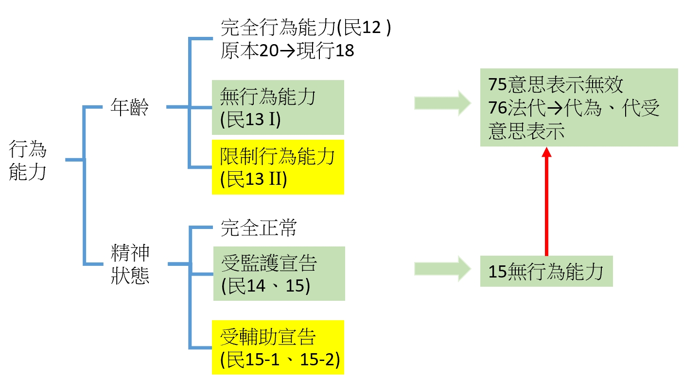

民法第14條、第15條、第15-1條、第15-2條
行為能力──精神狀態篇
監護宣告・受監護宣告之效果・輔助宣告・受輔助宣告之效果
1條文原文
第14條（監護之宣告及撤銷）
Ⅰ 對於因精神障礙或其他心智缺陷，致不能為意思表示或受意思表示，或不能辨識其意思表示之效果者，法院得因本人、配偶、四親等內之親屬、最近一年有同居事實之其他親屬、檢察官、主管機關、社會福利機構、輔助人、意定監護受任人或其他利害關係人之聲請，為監護之宣告。
Ⅱ 受監護之原因消滅時，法院應依前項聲請權人之聲請，撤銷其宣告。
Ⅲ 法院對於監護之聲請，認為未達第一項之程度者，得依第十五條之一第一項規定，為輔助之宣告。
Ⅳ 受監護之原因消滅，而仍有輔助之必要者，法院得依第十五條之一第一項規定，變更為輔助之宣告。
第15條（受監護宣告人之能力）
受監護宣告之人，無行為能力。
第15條之1（輔助之宣告及撤銷）
Ⅰ 對於因精神障礙或其他心智缺陷，致其為意思表示或受意思表示，或辨識其意思表示效果之能力，顯有不足者，法院得因本人、配偶、四親等內之親屬、最近一年有同居事實之其他親屬、檢察官、主管機關或社會福利機構之聲請，為輔助之宣告。
Ⅱ 受輔助之原因消滅時，法院應依前項聲請權人之聲請，撤銷其宣告。
Ⅲ 受輔助宣告之人有受監護之必要者，法院得依第十四條第一項規定，變更為監護之宣告。
第15條之2（受輔助宣告之人之行為能力）
Ⅰ 受輔助宣告之人為下列行為時，應經輔助人同意。但純獲法律上利益，或依其年齡及身分、日常生活所必需者，不在此限：
一、為獨資、合夥營業或為法人之負責人。
二、為消費借貸、消費寄託、保證、贈與或信託。
三、為訴訟行為。
四、為和解、調解、調處或簽訂仲裁契約。
五、為不動產、船舶、航空器、汽車或其他重要財產之處分、設定負擔、買賣、租賃或借貸。
六、為遺產分割、遺贈、拋棄繼承權或其他相關權利。
七、法院依前條聲請權人或輔助人之聲請，所指定之其他行為。
Ⅱ 第七十八條至第八十三條規定，於未依前項規定得輔助人同意之情形，準用之。
Ⅲ 第八十五條規定，於輔助人同意受輔助宣告之人為第一項第一款行為時，準用之。
Ⅳ 第一項所列應經同意之行為，無損害受輔助宣告之人利益之虞，而輔助人仍不為同意時，受輔助宣告之人得逕行聲請法院許可後為之。
關聯條文索引：第75條～第85條（行為能力之法律效果）
第75條、第76條（無行為能力人之效果）、第77條（限制行為能力人為意思表示應得允許）、 第78條～第83條（單獨行為無效、契約效力未定、催告權、撤回權、詐術之強制有效——§15-2 II準用）、 第85條（獨立營業之允許——§15-2 III準用）。
2條文結構
年齡篇是用「7歲」「18歲」這種絕對客觀的年齡切點來分級；精神狀態篇則不同，法院要就個案具體審查行為人的意思能力（辨識、表達的能力）程度，再決定要宣告到哪一級：
| 宣告類型 | 要件（意思能力狀態） | 行為能力等級 | 依據 |
|---|---|---|---|
| 監護宣告 | 因精神障礙或心智缺陷，「不能」為意思表示或受意思表示，或「不能」辨識意思表示之效果 | 視為無行為能力 | §14、§15 |
| 輔助宣告 | 因精神障礙或心智缺陷，為意思表示或受意思表示，或辨識意思表示效果之能力「顯有不足」（未達監護程度） | 保留行為能力，僅列舉行為須經同意 | §15-1、§15-2 |

下圖是行為能力的完整體系總覽，同時涵蓋「年齡」與「精神狀態」兩條分支。年齡分支（§12、§13）已於前一份講義說明，這裡再次呈現全貌，讓你看清楚監護宣告與輔助宣告在整個體系中的相對位置——監護宣告的效果與「無行為能力」（未滿7歲）是同一條線（§15→§75、§76），輔助宣告的效果則準用「限制行為能力」（§77以下）的規則架構，但適用範圍限縮在第15條之2所列舉的七款重要行為。

3要件逐項解析
① 第14條──監護宣告的要件
要件有二：(1) 行為人因「精神障礙或其他心智缺陷」；(2) 致「不能」為意思表示或受意思表示，或「不能」辨識其意思表示之效果。程度上要求的是「完全不能」，例如長期昏迷、植物人狀態、重度失智或重度智能障礙，屬於意思能力的全然欠缺。聲請權人範圍很廣，除本人、配偶、四親等內親屬外，也包含輔助人與意定監護受任人——這反映修法後監護、輔助兩制度之間可以互相轉銜（第14條第3項、第4項：法院認為未達監護程度可逕依聲請改為輔助宣告；受輔助宣告人如日後惡化，也可變更為監護宣告）。
② 第15條──受監護宣告人之效果
條文極簡：「受監護宣告之人，無行為能力。」效果上直接與第13條第1項（未滿7歲）的無行為能力人並列適用第75條、第76條，其意思表示當然無效，須由法定代理人（監護人）代為、代受意思表示。這裡要注意：即使受監護宣告之人在某次行為時「神智清醒」，其意思表示依然無效，因為監護宣告是對其行為能力所作的「身分上宣告」，不是逐次審查個別行為時的意思能力狀態——這正好呼應年齡篇「客觀、絕對標準」的精神，只是這裡的客觀標準不是年齡，而是法院的宣告本身。
③ 第15-1條──輔助宣告的要件
要件：(1) 因精神障礙或其他心智缺陷；(2) 致意思表示、受意思表示或辨識意思表示效果之能力「顯有不足」——程度比監護宣告輕，是「能力減損」而非「能力全無」。聲請權人範圍較監護宣告窄，不包含輔助人與意定監護受任人（因為此時尚未有輔助人存在）。
④ 第15-2條──受輔助宣告人之效果
與監護宣告不同，受輔助宣告之人「不喪失」行為能力，只有在從事第一項列舉的七款重要行為（獨資合夥／消費借貸保證贈與信託／訴訟行為／和解調解仲裁／不動產等重要財產處分／遺產分割拋棄繼承／法院指定之其他行為）時，才需要經輔助人同意；同樣保留「純獲法律上利益」「日常生活所必需」的例外（§15-2 I但書），架構上與限制行為能力人的§77但書幾乎對稱。第二項明文準用第78條至第83條（單獨行為無效、契約效力未定、催告、撤回、詐術之強制有效），第三項準用第85條（獨立營業之允許）——這些細節效果留待後續講義展開，這裡先掌握「準用架構」本身。
4學說見解
輔助宣告制度的規範目的與體系定位具名作者
輔助宣告制度自2008年增訂、2009年施行後，將我國成年監護制度從過去「監護（禁治產）宣告一級制」，修正為「監護宣告／輔助宣告二級制」，在比較法上雖非首創，但對我國行為能力規範體系而言意義重大，有必要就其規範目的、體系定位、基本構造及解釋適用進行檢討分析。
王耀霆（學習司法官）〈簡析輔助宣告制度〉 資料來源連結 →
※本文為司法官學習期間之研究報告，非正式期刊論文，作者具名但機構審查層級與一般期刊論文不同，建議日後有機會再核對是否有後續正式發表版本。
監護宣告要件用語與刑法、行政罰法之立法對照待驗證來源
2008年修法時，立法者參酌行政罰法第9條第3項及刑法第19條第1項規定，將監護宣告要件修正為現行「不能為意思表示或受意思表示，或不能辨識其意思表示之效果」之用語，與修法前的「禁治產宣告」用語相比，更貼近其他部門法對於欠缺意思能力／責任能力的描述方式，也讓監護宣告制度的用語脈絡與整體法秩序的價值判斷較為一致。
正律法律事務所〈淺談成年監護之新制度〉 資料來源連結 →
監護宣告與輔助宣告的區辨基準待驗證來源
監護宣告與輔助宣告的核心差異，在於行為人意思能力欠缺的「程度」：完全無法判斷、表達者宣告監護，僅判斷、表達能力降低但未完全喪失者宣告輔助。實務上常見的監護宣告原因包含失智症、腦中風後遺症、重病昏迷等；輔助宣告則常見於輕度智能障礙、初期失智等日常生活尚可自理，但容易受騙或做出不利決定的情形。
法律百科 Legispedia〈什麼是監護宣告？輔助宣告？〉 資料來源連結 →
5實務見解
案由：所有權移轉登記。本案被上訴人於簽訂不動產買賣契約「後」才經法院為輔助宣告，上訴人主張其罹患精神疾病，簽約時之意思表示應屬無效，或至少須經輔助人承認始生效力。法院就「受輔助宣告前」精神障礙者之意思表示效力，作了完整的體系性說明。
① 未受監護宣告之精神耗弱者，原則上意思表示仍屬有效
「按民法第75條但書所謂無意識，係指全然無識別、判斷之能力。所謂精神錯亂，則指精神作用發生障礙，已達喪失自由決定意思之程度。均指事實上欠缺意思能力而不能為有效的意思表示而言。故未受禁治產宣告之成年人，於行為時縱不具正常之意思能力，惟如未達上述無意識或精神錯亂之程度，要難謂其意思表示無效。（最高法院98年台上字第1702號、99年台上字第1994號判決意旨）」
② 受輔助宣告前，意思能力顯有不足者之行為效力：不類推適用第79條
「意思能力較常人顯有不足之人，於未受輔助宣告以前，既欠缺公示方法使交易相對人得以確認行為人所為法律行為之效力；且斯時行為人並無輔助人，其法律行為之效力是否可得輔助人承認仍在未定之天，致其法律行為之效力懸於效力未定之狀態，對於交易安全之保障傷害程度更強。故法律就意思能力顯較常人不足之行為人，所為重大法律行為之效力，在其受輔助宣告前雖無明文規定，應認為其所為法律行為即屬有效，並未違反法律規範之計劃及意旨，尚難認有漏洞存在，無以類推適用予以補充之餘地。」
教學重點：這兩段推理合起來說明了一個容易被誤解的地方——「精神狀態不好」不等於「當然無效」或「效力未定」。只有真正經法院宣告（監護或輔助）之後，才會依§15或§15-2發生法律明文規定的效果；宣告之前，即使當事人客觀上已經有精神障礙，除非已達第75條但書「無意識或精神錯亂」的極端程度，否則其法律行為原則上仍然有效，也不能類推適用第79條「效力未定」的規定來保護尚未受宣告之人——因為法律就此已經是「有意的沉默」，不是漏洞。
裁判字號：臺灣高等法院臺中分院108年度上易字第582號民事判決
6教學案例
以下案例為 AI 虛構，僅供教學使用，非真實案件。
事實
陳伯伯罹患重度失智症，經法院為監護宣告，由兒子小陳擔任監護人。某日鄰居老王趁小陳不在，帶著契約到家裡，陳伯伯當時精神狀況難得清醒，親口說「好啊，賣給你」，並在契約上簽了名，將自己名下的土地以低價賣給老王。小陳事後發現，主張契約無效。
爭點
受監護宣告之人在「清醒」的當下所為意思表示，是否因為當時看起來意思清楚，就例外承認其效力？
分析
陳伯伯已經受法院監護宣告，依第15條規定為無行為能力人，其意思表示依第75條前段當然無效——這是一種「身分上」的宣告效果，不會因為個案中他當下神智特別清楚就例外承認效力。這與年齡篇「未滿7歲當然無效」的邏輯完全一致：一旦落入無行為能力的身分，就不再逐案審查行為時的實際意思能力。土地買賣須由法定代理人（監護人小陳）代為意思表示才能生效（§76）。
結論
陳伯伯簽約的意思表示無效，土地買賣契約不成立，老王無法取得土地。
事實
美美因輕度智能障礙經法院為輔助宣告，由姐姐擔任輔助人。美美平常可以自己搭公車、買日用品，某天她自行決定用存款買了一台二手汽車，價值15萬元，並未告知輔助人姐姐。
爭點
受輔助宣告之人購買汽車的行為，是否需要經輔助人同意才生效？
分析
美美受輔助宣告，依第15-2條並未喪失行為能力，原則上可以自行為法律行為；但「汽車」屬於第15-2條第1項第5款「重要財產之處分、設定負擔、買賣、租賃或借貸」列舉範圍內，需經輔助人同意才生效力，且不屬於「純獲法律上利益」或「日常生活所必需」的例外情形（買二手車不同於買日用品）。因此依第15-2條第2項準用第79條，這是一個效力未定的契約行為，須經輔助人事後承認。
結論
若姐姐拒絕承認，買賣契約不生效力；若姐姐事後承認，則溯及生效。這與限制行為能力人未經法定代理人允許訂立契約的處理方式（§79）架構相同。
7申論練習題與模擬解答
本節僅先建立標題佔位，題目與模擬解答待日後補充。
待補充8速查卡
民法第14、15、15-1、15-2條・行為能力精神狀態分級
| 宣告類型 | 意思能力程度 | 行為能力等級 |
|---|---|---|
| 監護宣告（§14、§15） | 完全不能為意思表示／辨識效果 | 無行為能力（同§13 I，準用§75、§76） |
| 輔助宣告（§15-1、§15-2） | 意思能力顯有不足（未達監護程度） | 保留行為能力，僅七款重要行為須經同意（架構近似§77以下） |
口訣意涵：意思能力「完全欠缺」宣告監護、視為無行為能力；意思能力「顯有不足但未全無」宣告輔助、僅列舉行為受限；在法院正式宣告之前，當事人的法律行為原則上仍然有效，不能類推適用效力未定的規定。